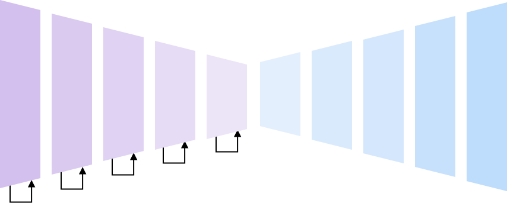
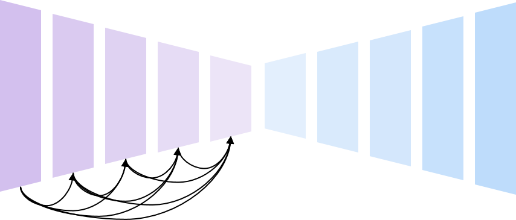
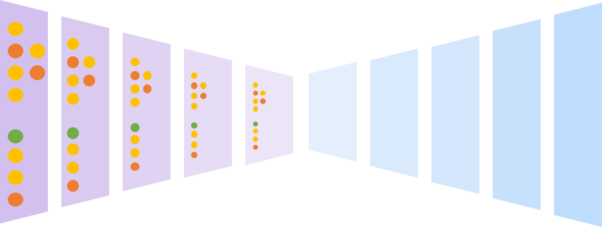
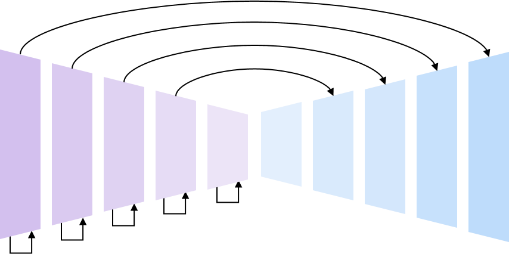
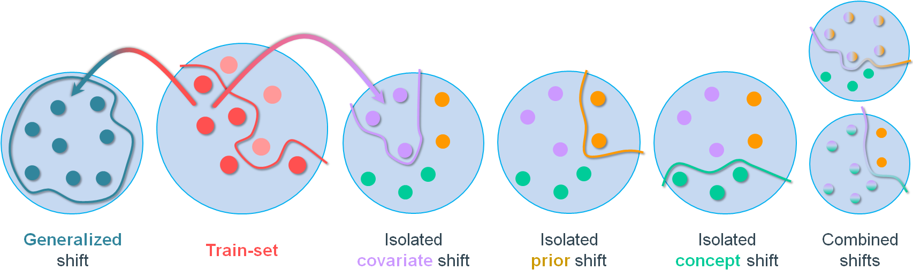
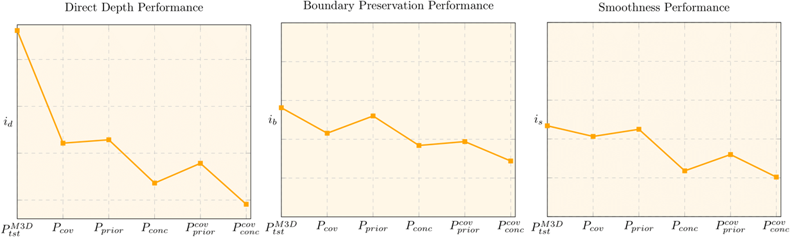
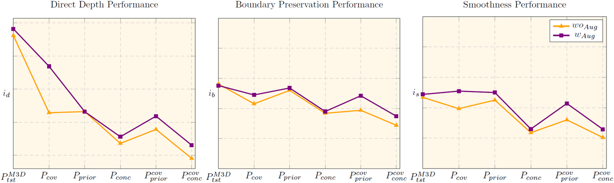
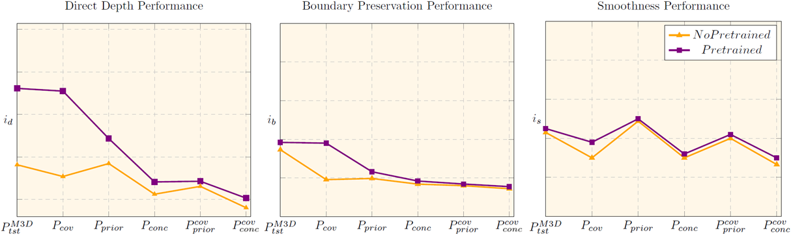
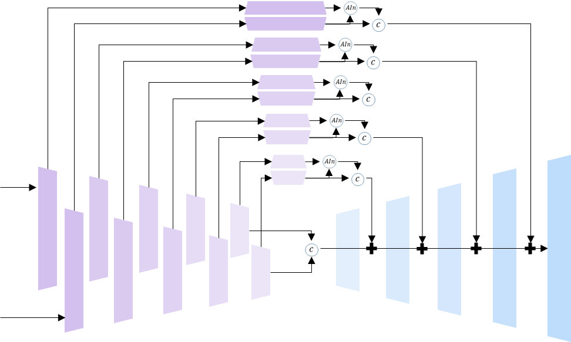

\(\textbf{Pano3D}\) is a new benchmark for depth estimation from spherical panoramas. Its goal is to drive progress for this task in a consistent and holistic manner. To achieve that we generate a new dataset and integrate evaluation metrics that capture not only depth performance, but also secondary traits like boundary preservation and smoothness. Moreover, \(\textbf{Pano3D}\) takes a step beyond typical intra-dataset evaluation schemes
to inter-dataset performance assessment. By disentangling generalization to three different axes, \(\textbf{Pano3D}\) facilitates proper extrapolation assessment under different out-of-training data conditions.
Relying on the \(\textbf{Pano3D}\) holistic benchmark for 360 depth estimation we perform an extended analysis and derive a solid baseline for the task.
Depth estimation performance evaluation
For evaluating depth from spherical panoramas we show that
without proper weighting the metrics favour performance in distorted areas.
Apart from the direct depth performance metrics, the \(\textbf{Pano3D}\) benchmark also
includes implementations for metrics measuring depth boundary preservation and
depth smoothness.. Finally, it also includes aggregated 3D metrics that consolidate
boundary and smoothness errors in different ways that are more appropriate for
different downstream tasks (e.g. view synthesis or 3D reconstruction).
Generalization capacity assessment
Most benchmarks focus on intra-dataset performance assessment, using a dataset’s train and test splits.
Even though careful selection of the test samples can guarantee the quality of the evaluation, the dataset
generation process may sometimes be biased due to inherent data collection reasons
(e.g. same camera types, restricted availability of capture targets).
To overcome such issues and take a step towards measuring progress in in-the-wild settings, we decompose generalization into three different axes:
i) target depth distribution,
ii) scene context, and
iii) varying camera domain.
Data Generation
Using Matterport3D (M3D) [1] for training and the \(\textbf{Pano3D}\) GibsonV2 (GV2) [2] splits for testing,
the benchmark delivers a zero-shot cross-dataset transfer evaluation that can be
applied to different generalization settings on-demand. In addition,
\(\textbf{Pano3D}\) offers renders in two resolutions (\(1024 \times 512\) and \(512 \times 256\)).
We further release a big part of GibsonV2 that has not been used in the \(\textbf{Pano3D}\) testing splits,
and can be used as additional training data.
GV2 Tiny split
GV2 Medium split
GV2 Full+ split
GV2 Filmic
M3D
Download
To download the \(\textbf{Pano3D}\) dataset we follow a two-step process:
Access to the \(\textbf{Pano3D}\) dataset requires agreement with the terms and conditions for each of the 3D datasets
that were used to create (i.e. render) it, and more specifically, Matterport3D and GibsonV2.
Therefore, in order to grant you access to this dataset, we need you to first fill request form.
Then, you need to perform a request for access to the respective Zenodo repositories,
where the data are hosted (more information can be found in our download page).
Due to data-size limitations, the dataset is split into six (6) repositories,
which respectively contain the color image, depth and normal map renders for each image.
The repositories are split into the two resolutions, with each subgroup of 3 repositories
containing the entire Matterport3D dataset renders, the entire GibsonV2 test split renders,
and the remainder of GibsonV2 which is used as additional training data.
Therefore, a separate request for access needs to be made to each repository in order to download
the corresponding data.
Note that only completing one step of the two (i.e. only filling out the form, or only requesting access
from the Zenodo repositories) will not be enough to get access to the data.
We will do our best to contact you in such cases and notify you to complete all steps as needed,
but our mails may be lost (e.g. spam filters/folders).
The only exception to this, is if you have already filled in the form and need access to another Zenodo repository
(for example you need extra dataset/splits which are hosted on different Zenodo repositories), then you only need
to fill in the Zenodo request but please, make sure to mention that the form has already been filled in so that
we can verify it.
Each volume is a multi-part archive and is broken down in several .7z files (2GB or 4GB each) for more convenient downloading on low
bandwidth connections. You need all the .7z archives of each volume in order to extract the containing files.
Searching for a solid baseline
Architecture
The \(\textbf{Pano3D}\) baseline search relies on single-pass autoencoder architectures supervised by a weighted combination
of different loss functions, each focusing on a specific depth map trait.
For the autoencoders we use a simple convolution decoder and focus our search on the encoder part, and specifically:
A standard ResNet-152 encoder [3] with \(110M\) parameters

A standard DenseNet-161 encoder [4] with \(55M\) parameters

A neural architecture search encoder, PNAS [5] with \(99M\) parameters

In addition, our search also considers architectures with encoder-decoder skip connections:
A customized ResNet-152 autoencoder with UNet-like skip connections
starting from the first residual block and \(112M\) parameters

Losses
For the baseline search, we build upon prior literature regarding depth regression losses [14] and
consider standard supporting losses, as well as a recently presented globalized loss:
A \(L_1\) depth error, which is the better performing direct objective [7], supported by:
A multi-scale gradient maching term [8], that aims at preserving boundaries (\(L_{grad}\))
A surface orientation error term [9], that aims at minimizing the cosine distance between normals (\(L_{cosine}\))
A combined objective (\(L_{comb})\) for direct depth performance, boundary preservation and surface smoothness,
The above combined error is further supported by a global virtual normal loss (VNL) (\(L_{vnl}\)) [10]
For the direct depth performance, it is observed that generally
the combined loss leads to improved performance (with a notable exception being the ResNetskip model).
Interestingly the VNL only improves the performance of the UNet model, which can be attributed to the
combined effect of a smaller receptive field than the other models (inferior global context capture),
and of the localised prediction effect that the skip connections introduce.
As expected, the smoothness objective hurts boundary preservation while the gradient
matching term boosts, with UNet also benefiting from the VNL loss in terms of preserving boundaries.
Opposite from the boundary, the gradient matching term hurts smoothness when used in
isolation, but the smoothness term helps balance its effect, and even benefits from their combined use.
Again, UNet is the only architecture to consistently benefit from VNL across all indicators
Best Models per Architecture
From the above analysis, we define the best performing models of each architecture, with the only
conflicting choice being the ResNetskip selected model where a balanced performer was chosen.
Qualitative results follow with the images on the left allowing for a transition between the input color
image and the normal maps from the predicted depth, accompanied by Poisson 3D reconstruction [17] of the
estimated depth maps.
\(\color{#E3D10A}{ResNet}\)
\(\color{#800080}{DenseNet}\)
\(\color{#00FFFF}{PNAS}\)
\(\color{#FF00FF}{ResNet_{skip}}\)
\(\color{#FFA600}{UNet}\)
Studying generalization
Three types of distribution shift
Going beyond zero-shot cross-dataset transfer [23] and generalized distribution shift, we identify three types of distribution
shift [24,25,26]
covariate, prior and concept,
and design an experimental framework to study the impact of each type in isolation or combined. This way, we can investigate the apparent stackability of
various shifts, measure the effectivenes of common mitigation techniques, such as pretraining and photometric augmentation, and unfold their performance
envelope in a granular and precisely controlled way gushing valuable insight.
Targeted-shift dataset creation
Exploiting data selection and rendering synthesis, we crafted five test-sets that, in conjunction with the original M3D train-set, exhibit targeted distribution shift
along one or more of the aforementioned axes.
Covariate shift concerns the input domain. In our case, this corresponds to the color of the input images.
By rendering the original M3D test-set with the Blender™'s filmic-view transform, we create a split that is identical to the original but differs only in the
pixel-color statistics, transpiring a cinematic sense.
Prior shift concerns the output domain. In our case, this corresponds to the depth distribution of the scenes involved and
as a consequence, the respective predictions of the models to be output. After analyzing the GV2 dataset, we identified a data-split that exhibits significantly different
depth distribution compared to the original M3D train-set. By rendering it with the standard color transfer function, the same we used to render the original M3D train-set,
we create a split that is kindred to that, apart from their depth statistics.
Concept shift refers to the relationship between the input and output distributions. In our case, this translates to the
type of the buildings presented in our data. While the original M3D train-set is comprised of residential buildings, we identified a GV2 data-split that despite exhibiting
similar depth-statistics, it includes industrial and other non-residential premises (i.e. garages, commercial stores and under-construction sites) as well.
By rendering this split in the usual manner and using it to test a model trained on the original M3D train-set, we can closely emulate a concept drift scenario.
Lastly, by manipulating rendering and data-splitting the way we showcased, we created two more test-sets exhibiting combined shift of either
covariate & prior or
covariate & concept, enabling the study of their theorized stackability.
All the aforementioned data-spits can be found in our download page.

Benchmarking
Using our composite performance indicators, we put to the test all five data-splits, evaluating the baseline UNet model.
Initially, we evaluate the performance drop each distribution shift bears, in regards to all three quality indicators analyzed.
Then, we apply two commonly exercised methods for addressing distribution-shift, pretraining and photometric augmentation,
and decompose their apparent beneficiary behaviour in an attempt to deeply understand and reason the underlying workings of their success.
Performance across distribution shifts

Distribution shift of any kind degrades performance.
Concept shift is the most challenging to mitigate.
Shifts are, evidently, stackable.
Photometric augmentations

Significant performance boost when covariate shift manifests.
Boost is higher when covariate shift is dealt in isolation but lower when it is mixed with others.
Pretrained initialization

We employ the PNAS model pretrained on ImageNet.
Pretraining boosts direct performance on the original test-set.
It mitigates covariate shift in regard to all quality traits, but only in isolation, as combinations proved too hard.
Evidently, the model only benefits from higher quality parameter initialization rather than gaining generalization capacity.
Refining Depth Estimates
Taking into account the developments for depth refinement, \(\textbf{Pano3D}\) also includes an analysis of a
recent work using displacement fields [18], which is properly adapted to the spherical domain,
to periodic displacement fields.
We use a specialized guided stacked hourglass architecture as a refinement module that is trained
using a pretrained depth model. Apart from the dual (guided) input encoder path, the guided stacked
hourglass model exchanges information between the color and depth features using
Adaptive Instance Normalization (AdaIn) [19].

The periodic displacement fields consistently improve the boundary preservation performance
of all models apart from the UNet one, which nonetheless, already exhibits the best boundary preservation performance.
Qualitative samples overlaying the detected boundaries for selected models are illustrated below:
Boundary preservation qualitative comparison, from left to right: \(\textbf{i)}\) \(\color{#00cc99}{GT depth}\), \(\textbf{ii)}\) \(\color{#FFA600}{ UNet}\),
\(\textbf{iii)}\) \(\color{#00FFFF}{PNAS}\), \(\textbf{iv)}\) \(\color{#E3D10A}{ResNet}\),
and \(\textbf{v)}\) \(\color{#FF00FF}{ResNet_{skip}}\).
Comparisons
Overall, the \(\textbf{Pano3D}\) baseline search shows that skip connections offer higher boundary
preservation performance, naturally at the expense of smoothness, but their direct depth estimation performance
does not suffer from this. The following comparison between the UNet and PNAS architecture (used in [20]) shows this
different, with the advantage figure on the right (similar to [21]) illustrating the areas where each model performers better than the other
Qualitative comparison between \(\color{#E3D10A}{ResNet}\) \(and\) \(\color{#FF00FF}{ResNet_{skip}}\).
It is apparent that the addition of skip connections allows \(\color{#FF00FF}{ResNet_{skip}}\) to capture finer-grained details.
Qualitative comparison between \(\color{#FFA600}{UNet}\) and \(\color{#00FFFF}{PNAS}\).
Apparently, \(\color{#00FFFF}{PNAS}\) provides smoother results while it is clear that \(\color{#FFA600}{UNet}\) is able to capture finer-grained details.
In-the-wild Results
The \(\textbf{Pano3D}\) baseline is a solid panorama depth estimation model that is positioned favourably against the state-of-the-art,
with the following samples showing the BiFuse [22] predictions, compared to the UNet ones, when applied to in-the-wild panoramas
acquired via both 360 cameras and stitched mobile phone captures.
Qualitative comparison between \(\color{#FFA600}{UNet}\) (on the left column) \(and\) \(\color{#fa8ef9}{BiFuse}\) [22] (on the right column).
Acknowledgements
This project has received funding from the European Union’s Horizon 2020 innovation programme ATLANTIS under grant agreement No 951900.
References
Chang, A., Dai, A., Funkhouser, T., Halber, M., Niessner, M., Savva, M., Song, S., Zeng, A. and Zhang, Y., 2017. Matterport3d: Learning from rgb-d data in indoor environments. arXiv preprint arXiv:1709.06158
Xia, F., Li, C., Chen, K., Shen, W.B., Martín-Martín, R., Hirose, N., Zamir, A.R., Fei-Fei, L. and Savarese, S., 2019. Gibson env v2: Embodied simulation environments for interactive navigation. Stanford University, Tech. Rep
He, K., Zhang, X., Ren, S. and Sun, J., 2016, October. Identity mappings in deep residual networks. In European conference on computer vision (pp. 630-645). Springer, Cham.
Iandola, F., Moskewicz, M., Karayev, S., Girshick, R., Darrell, T. and Keutzer, K., 2014. Densenet: Implementing efficient convnet descriptor pyramids. arXiv preprint arXiv:1404.1869.
Liu, C., Zoph, B., Neumann, M., Shlens, J., Hua, W., Li, L.J., Fei-Fei, L., Yuille, A., Huang, J. and Murphy, K., 2018. Progressive neural architecture search. In Proceedings of the European conference on computer vision (ECCV) (pp. 19-34).
Ronneberger, O., Fischer, P. and Brox, T., 2015, October. U-net: Convolutional networks for biomedical image segmentation. In International Conference on Medical image computing and computer-assisted intervention (pp. 234-241). Springer, Cham.
Carvalho, M., Le Saux, B., Trouvé-Peloux, P., Almansa, A. and Champagnat, F., 2018, October. On regression losses for deep depth estimation. In 2018 25th IEEE International Conference on Image Processing (ICIP) (pp. 2915-2919). IEEE
Li, Z. and Snavely, N., 2018. Megadepth: Learning single-view depth prediction from internet photos. In Proceedings of the IEEE Conference on Computer Vision and Pattern Recognition (pp. 2041-2050).
Wang, X., Fouhey, D. and Gupta, A., 2015. Designing deep networks for surface normal estimation. In Proceedings of the IEEE Conference on Computer Vision and Pattern Recognition (pp. 539-547).
Yin, W., Liu, Y., Shen, C. and Yan, Y., 2019. Enforcing geometric constraints of virtual normal for depth prediction. In Proceedings of the IEEE/CVF International Conference on Computer Vision (pp. 5684-5693).
Eigen, D., Puhrsch, C. and Fergus, R., 2014. Depth map prediction from a single image using a multi-scale deep network. arXiv preprint arXiv:1406.2283.
Zioulis, N., Karakottas, A., Zarpalas, D., Alvarez, F. and Daras, P., 2019, September. Spherical view synthesis for self-supervised 360 depth estimation. In 2019 International Conference on 3D Vision (3DV) (pp. 690-699). IEEE.
Hu, J., Ozay, M., Zhang, Y. and Okatani, T., 2019, January. Revisiting single image depth estimation: Toward higher resolution maps with accurate object boundaries. In 2019 IEEE Winter Conference on Applications of Computer Vision (WACV) (pp. 1043-1051). IEEE
Koch, T., Liebel, L., Fraundorfer, F. and Korner, M., 2018. Evaluation of cnn-based single-image depth estimation methods. In Proceedings of the European Conference on Computer Vision (ECCV) Workshops (pp. 0-0)
Girardeau-Montaut, D., 2006. Détection de changement sur des données géométriques tridimensionnelles (Doctoral dissertation, Télécom ParisTech).
Cignoni, P., Rocchini, C. and Scopigno, R., 1998, June. Metro: measuring error on simplified surfaces. In Computer graphics forum (Vol. 17, No. 2, pp. 167-174). Oxford, UK and Boston, USA: Blackwell Publishers.
Kazhdan, M. and Hoppe, H., 2013. Screened poisson surface reconstruction. ACM Transactions on Graphics (ToG), 32(3), pp.1-13.
Ramamonjisoa, M., Du, Y. and Lepetit, V., 2020. Predicting sharp and accurate occlusion boundaries in monocular depth estimation using displacement fields. In Proceedings of the IEEE/CVF Conference on Computer Vision and Pattern Recognition (pp. 14648-14657).
Huang, X. and Belongie, S., 2017. Arbitrary style transfer in real-time with adaptive instance normalization. In Proceedings of the IEEE International Conference on Computer Vision (pp. 1501-1510).
Lee, J. and Kim, C.S., 2020, August. Multi-loss Rebalancing Algorithm for Monocular Depth Estimation. In ECCV (17) (pp. 785-801).
Sun, C., Sun, M. and Chen, H.T., 2020. HoHoNet: 360 Indoor Holistic Understanding with Latent Horizontal Features. arXiv preprint arXiv:2011.11498.
Wang, F.E., Yeh, Y.H., Sun, M., Chiu, W.C. and Tsai, Y.H., 2020. Bifuse: Monocular 360 depth estimation via bi-projection fusion. In Proceedings of the IEEE/CVF Conference on Computer Vision and Pattern Recognition (pp. 462-471).
Ranftl, R., Lasinger, K., Hafner, D., Schindle, K. and Koltun, V., 2020. Towards Robust Monocular Depth Estimation: Mixing Datasets for Zero-shot Cross-dataset Transfer. arXiv:1907.01341
Hu, R., Sang , J., Wang, J., Hu, R. and Jiang, C., 2021. Understanding and Testing Generalization of Deep Networks on Out-of-Distribution Data. arXiv:2111.09190
Federici, M., Tomioka, R. and Forré, P, 2021. An Information-theoretic Approach to Distribution Shifts. arXiv:2106.03783
Wiles, O., Gowal, S., Stimberg, F. and Alvise-Rebuffi, S., 2021. A Fine-Grained Analysis on Distribution Shift. arXiv:2110.11328